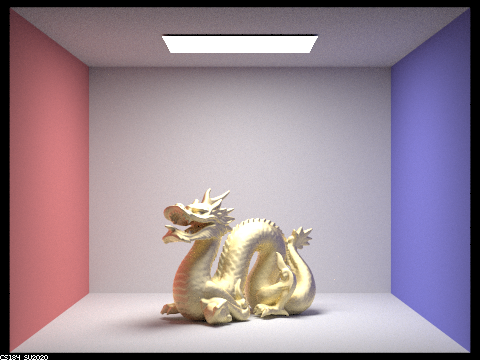
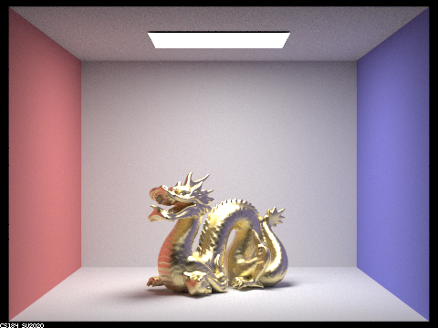
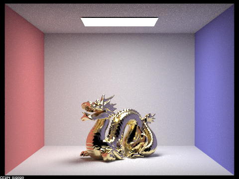
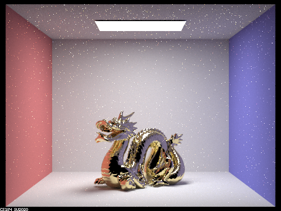
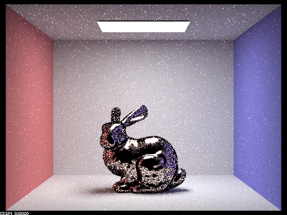
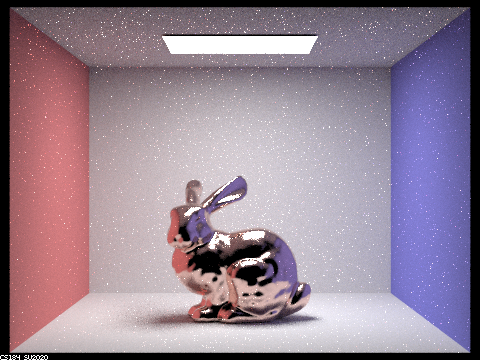

The two parts we chose to complete for credit were parts 1 and 2. We attempted to do all parts, but in the end parts 1 and 2 had the best results. Part 1 involved impelmenting reflection and reraction, which allow for mirror-like and glass-like surfaces. Refraction was the more difficult part as it relied on Schlick's approximation and checks for internal reflection. Part 2 we worked to be able to render microfacet surfaces, which had similar concepts to both reflection and refraction of the previous part. The microfacets themselves are assumed to be mirrorlike in nature, which involved calculating reflected angle again. But also because these surfaces are metal and conductors, we had to use a different set of Fresnel equations, for which Schlick's approximation could not be used. Nevertheless we used a different way to estimate the color, by doing the full calculation only for rgb wavelengths. Debugging this part took quite a while due to a minus sign in the wrong place, but in the end it produced nice results.
In part 1, we implemented reflection and refraction in glass and mirror materials. We did this by implementing the reflection and refraction functions and writing the sample_f functions for the glass and mirror BSDFs. Calculating the perfect specular reflection of a given angle is fairly straightforward by using the formula w_out = -w_in + 2 * dot(w_in, n) * n. Calculating the refracted angle is a little bit more complicated. First, we have to figure out whether we are entering or exiting the object, which is decided by the sign on w_out's z value. Then, we can check if we have total internal reflection, which is when the inside of our square root on the z value of w_in, the vector we're trying to output, is less than 0. With that, we figure out the x, y, z values of our w_in from the x, y, z values of w_out and whether we are entering or exiting. One thing to note is that the z value of w_in will always be of the opposite sign of the z value for w_out. Implementing the bsdf for the mirror material is fairly straightforward, as it will always reflect in the same angle, so we can simply call our reflect function and be done with it. The glass material, which reflects and refracts, require using Schlick's approximation to randomly decide whether to reflect or refract. To compute Schlick's reflection coefficient R, we use the normalized halfway vector of w_in and w_out to replace the normal to calculate the cosine of the angle. To calculate R0, we assume n1 = 1, since we only have air in our scenes, and we let n2 be the index of reflection. Thus, given the probability R, there is an R chance that it will reflect and a (1-R) chance that it will refract.
This is a standard image of showing only light shot from the light source directly into the camera.
This is direct lighting, where light bounces at most once. Here we see that the walls and floor are illuminated, but the spheres are mostly black save for the specular highlights. This is because the only areas that the rays from the light source that reflects directly into the camera are the specular highlights. The specular highlight on the sphere in the front is somewhat fuzzy, and that is probably because of the Shlick approximation, where there is a random chance of reflection rather than always reflecting like the mirror sphere behind it.
The main thing to note is that the spheres now have significantly more detail on it, and it's not just pure black or specular highlight. This is because light has reflected off the walls, then reflected off the spheres, so we can begin to see the reflection of the environment with 2 bounces. As mentioned before, the reflection on the glass sphere is dimmer since it only has a random chance at reflecting. Also note that we have not seen refraction yet.
We now can see the effects of refraction with m = 3. This is because the first bounce will hit the sphere, the second bounce will go through and hit the inside of the sphere, and the third bounce will leave the sphere. This lets us see through the sphere with the refracted light. The bright spot under the sphere is from light entering the sphere, bouncing in the sphere, then exiting and bouncing off the ground.
The image is mostly the same except now the reflection of the glass sphere on the mirror sphere is properly colored. This is because after three bounces, light that goes through the glass sphere will hit the mirror sphere and on the fourth bounce it will reflect off the glass sphere.
All the initial reflections and refractions has already happened, so not much changes in the image.
The same as above, except the quality of the global illumination is better.
In part 2 we implemented support for rendering microfacet surfaces. The first step was writing functions for the Fresnel term and a normal distribution. The Fresnel term simulates the way different wavelengths of color are reflected at the interface between air and a conductor to ensure we can see the proper color changes. We considered whether there was a way to calculate this term using vector algebra, as it required the combination of 2 vectors into one, but ultimately settled on a loop for computation. The normal distribution simply samples the probability of facets whose normals are in the proper direction h. With these two tasks finished we were able to render materials using the default hemisphere sampling. The problem with the hemishpere sampling was that it produced substantial noise unless using an unreasonably high sample rate. To fix this we implemented importance sampling, which uses a distribution over theta and phi to sample a direction that is more likely to have an effect on the final render. Debugging was the most significant challenge for this part, particularly the issue that when rendering the rabbit it would be entirely black except for a few bright places that seemed to be reflecting correctly. It was hard to tell what was going wrong, because the issue with the renders only hinted at what could be the issue in code. In the end after carefully checking my code I discovered that I had misunderstood the direction of the wo ray to have negative z in local space. Thus when I wrote my equation for wi it was negative, and was directing light in the opposite direction as to where it should. Here we have rendered the gold dragon in a box with 4 different levels of surface roughness. As the roughness goes down the dragon becomes more shiny and glossy in appearance. As the smoothness increases, however, so does the noise in the image from stray bounces off its surface.
|  |
 |
|  |
 |
|  |
 |